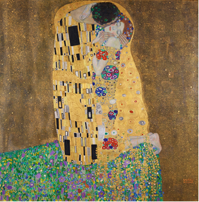
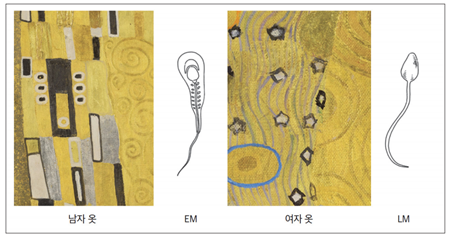

43 클림트의 키스
— 보이는 곳에 숨긴 3일
43.1 100년간의 오독
구스타프 클림트의 ’키스’는 100년간 사랑의 그림이었다.

황금빛 옷을 입은 남녀가 포옹하고, 남자는 얼굴이 보이지 않고, 여자는 황홀감에 눈을 감았다.
미술사학자들은 에로스를 읽었고, 심리학자들은 합일의 욕망을 읽었고, 대중은 세계에서 가장 유명한 키스를 봤다. 모두 보이는 것 안에서 의미를 찾았다. 아무도 문양 자체를 읽으려 하지 않았다.
2012년, 노벨 생리의학상 수상자 에릭 칸델이 『통찰의 시대』에서 지적했다. 남자 옷의 직사각형은 정자를, 여자 옷의 원형은 난자를 상징한다고. 세계가 100년간 로맨스를 봤던 그림에서 신경과학자는 생식세포를 봤다. 그러나 칸델도 상징 수준에서 멈췄다. 직사각형은 정자를 ‘뜻한다’, 원은 난자를 ‘뜻한다’ — 기호의 해독이었다.
43.2 문양을 읽다
2021년, 해부학자 유임주(고려대 의대)가 같은 그림을 들여다봤다. 그는 상징이 아니라 구조를 봤다.
고해상도로 확대하자 놀라운 것이 드러났다. 남자 옷의 검정 직사각형 주변에 정자 목의 미토콘드리아를 도식화한 흰 점들이 있었고, 여자 옷의 청색 테두리 원은 미수정 난자였고, 주황색 원 단 하나는 수정된 난자 — 다른 정자가 더 이상 들어오지 못하도록 난자막이 변한 순간이었다. 그 주변에 2세포기, 4세포기, 8세포기, 오디배까지.



칸델은 “무엇이 그려져 있는가”를 봤고, 유임주는 “어떤 순서로 진행되고 있는가”를 봤다. 클림트는 키스를 그린 것이 아니었다. 인간 발생의 처음 3일 을 그렸다.
43.3 클림트는 왜 숨겼는가
1900년 전후 비엔나에서 현미경 광학기술이 비약적으로 발전하고 있었다. 클림트는 비엔나 의대 해부학 교수 에밀 주커칸들의 부인 베르타가 운영하는 살롱을 드나들었고, 해부학 실습실을 견학했고, 에른스트 헤켈이 동물 발생 과정을 그린 도판들을 봤다.
헤켈처럼 그릴 수도 있었다. 정자를 정자로, 난자를 난자로, 발생학 도판 그대로. 그러지 않았다. 과학 삽화는 설명하지만 감동시키지 않는다. 클림트는 알게 하는 것이 아니라 느끼게 하는 것을 택했다. 키스의 표면에 수정란의 3일을 숨겼다. 직사각형은 장식이 아니라 정자의 단면이었고, 원은 패턴이 아니라 난자의 상태였고, 색의 변화는 디자인이 아니라 수정의 시간이었다.
43.4 JAMA가 그림을 실은 이유
이 연구는 세계적 의학학술지 JAMA에 실렸다. 무작위 대조시험(RCT)과 대규모 코호트 연구가 지배하는 저널이다. 환자도 없고, 표본도 없고, p-value도 없는 논문을 JAMA가 실은 이유는 클림트의 의도를 증명했기 때문이 아니다. 올바른 해상도의 눈이 올바른 층위를 읽는다는 것을 보여줬기 때문이다.
미술사학자는 양식을 봤고, 심리학자는 욕망을 봤고, 신경과학자는 상징을 봤고, 해부학자는 구조를 봤다. 같은 그림이었다. 눈이 달랐다.
43.5 맺음
파인만은 보이지 않는 것을 보이게 만들었고, 클림트는 보이지 않는 것을 보이는 곳에 숨겼다. 방향은 반대인데 둘 다 같은 확신에서 출발한다 — 구조는 형태 안에 있다.
AngraMyNew의 악상도 같은 구조다. 정돈된 표면 아래에 있는 패턴을 읽는 것, 그 감각이 논리보다 먼저 온다.
올바른 눈이 없으면 100년을 봐도 키스밖에 보이지 않는다. 해상도가 해석을 결정한다.
43.6 관련 문서
- 보이지 않으면 이해한 것이 아니다 — 파인만: 보이게 만든다. 클림트: 보이는 곳에 숨긴다
- 한글의 두 상태 — 같은 표면, 다른 상태
- 악상의 시대 — 정돈 이전의 진동이 데이터인 이유